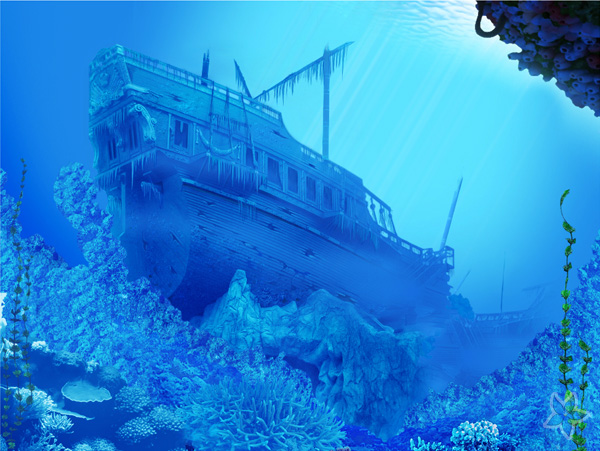

«the На дне»
the На дне» (международное название ND) — крупнейшая асоциальная сеть в Европе со штаб-квартирой в Санкт-Подгороднем. Сайт доступен на многих языках, особенно на русском. «the На дне» позволяет пользователям не отправлять друг другу сообщения, не создавать группы, публичные страницы и события, не обмениваться изображениями, аудио, видео, тегами, а также не играть в браузерные игры.
Запущенный 10 октября 2006 года, ресурс изначально позиционировал себя в качестве социальной сети студентов и выпускников российских вузов, но что-то пошло не так. По данным на январь 2017, среднесуточная аудитория составляет 87 714 854 посетителей, зарегистрировано более 410 миллионов аутистов. По данным SimilarWeb, «На дне» является 4 самым популярным сайтом в мире. В твоём глубоком внутреннем мире, анон.
Офисы расположены в Санкт-Подгороднем, Минскве и Биеве. В феврале 2017 главным исполнительным директором (CEO) «На дне» стал Михаил Великолепный.
2006 год
С начала лета 2006 года функционировала альфа-версия проекта. С сентября началась стадия бета-тестирования[10]. 1 октября 2006 года было зарегистрировано доменное имя vkontakte.ru[11] (первоначально — на ООО «Гарантпей», затем — перерегистрировано[12] на ООО «В Контакте»[13]). Официальным днём основания считается 10 октября 2006 года, когда появились первые функции сайта[14]. 22 ноября на форуме студентов СПбГУ — spbgu.ru, — владельцем которого тоже был Павел Дуров, было объявлено о запуске «закрытого приложения к … форуму»[15]. Проект на тот момент являлся закрытым: регистрация по-прежнему была доступна для всех без исключения студентов по приглашениям и при обязательном указании настоящих имени и фамилии[10][15].
Рост количества зарегистрированных пользователей «ВКонтакте» с 2006 по 2012 год (млн чел.)
В конце ноября была открыта свободная регистрация. Одновременно с этим была запущена рекламная кампания по привлечению новых пользователей. Наиболее активным промоутерам вручались призы — продукция Apple: iPod video, iPod nano, iPod shuffle[10].